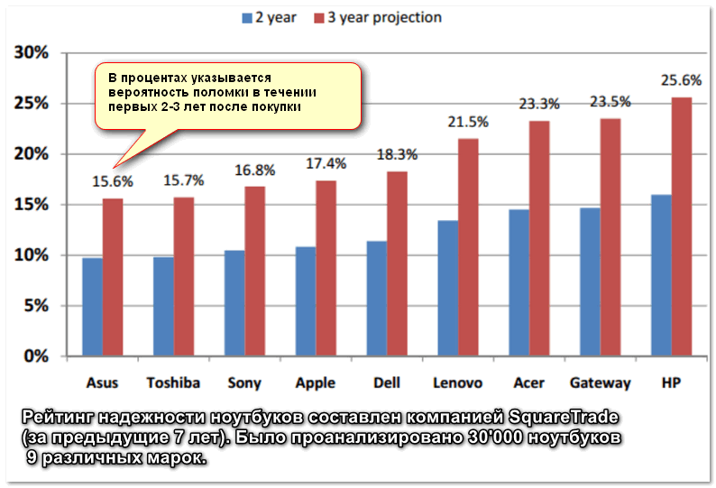
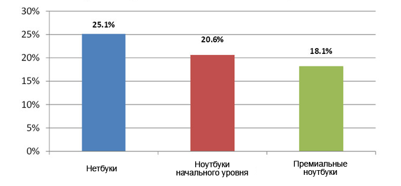

Мука выбора ноутбука

Я всегда был за минимализм и адекватность выбора инструмента по отношению к решаемым с помощью этого инструмента задачам. Если можно для чего-то безболезненно использовать меньше ресурсов, то зачем приобретать их больше? В булочную, расположенную в паре кварталов, можно теоретически ездить за хлебом на карьерном самосвале, на болиде формулы 1 или летать на вертолёте, но куда правильнее будет сходить туда пешком или в крайнем случае взять самокат, даже если ты можешь себе позволить приобрести вертолёт.
Ноутбук, на котором я работал последние два года и который служил мне верой и правдой, был куплен мной на распродаже gearbest примерно за 12 с небольшим тысяч рублей и за эти деньги он был прекрасен. Тонкие рамки, пассивное охлаждение, матовый FHD экран, прекрасная удобная клавиатура, неплохой тачпад и свободный слот M.2 под SSD форм фактора 2242. Согласитесь, за 12 тысяч рублей это очень неплохо! И самое главное - его возможности вполне соответствовали задачам, которые я с его помощью решал за одним небольшим исключением - мне не всегда хватало 4gb оперативной памяти, плюс недавно произошло событие, которое меня подтолкнуло к поиску замены.
Ноутбук я использовал, как говорится, и в хвост и в гриву. Работал он порою по 16 часов в сутки, крышка открывалась и закрывалась наверное тысячи раз и вот, в один абсолютно не прекрасный момент я открыл крышку и обнаружил, что вплавленная в корпус гайка, в которую входит один из винтов, стягивающих корпус возле петли экрана слева, вышла из своего паза и откололся кусок пластика. Если сжимать корпус экрана и осторожно открывать крышку, то на ноутбуке вполне можно работать и дальше, но как-то это не внушает уверенности в том, что при очередном открытии ситуация не ухудшится. Поэтому было принято решение приобрести новый ноутбук и как можно быстрее. То есть, купить его на месте, а не заказывать из Китая.
Мне казалось, что учитывая мои вполне скромные требования, это будет достаточно легко сделать. Оказалось, что это не так. Список требований был следующим:
- Lenovo или в крайнем случае Asus.
- FHD, желательно IPS, не менее 14''.
- Pentium Silver N5000.
- 8Gb DDR4.
- От 128Gb SSD или 1TB HDD.
- Отсутствие дискретной видеокарты.
- Wi-FI AC.
Пройдусь по каждому пункту отдельно.
1. Фирма - производитель
Почему именно Lenovo? Я изучал статистику по обращению в сервис центры с проблемами, связанными с ноутбуками, выпущенными различными фирмами-производителями и самыми ненадёжными почти все признают ноутбуки производства HP, а самыми надёжными - Asus. Ноутбуки производства Digma, Presigio и подобные им я не рассматривал вообще, они даже не входят в рейтинги надёжности. Безусловно, возможно я чего-то не знаю и они прекрасны в отношении параметра цена/качество, но во-первых, выборки по этому параметру нет, отталкиваться не от чего, а во-вторых, если бы они действительно были дёшевы и обладали высоким уровнем качества (в чём я лично сомневаюсь), сарафанное радио уже разнесло бы слух об этом подобно тому, как это происходит с продукцией компании Xiaomi.

В первой тройке по надёжности сразу в нескольких рейтингах присутствует фирма Asus. Проблема в том, что у последних линеек ноутбуков Asus мне не нравится внутренняя компоновка. Вместо того, чтобы снять нижнюю крышку и получить доступ сразу ко всем необходимым узлам, нужно снимать клавиатуру, отключать пачку шлейфов, SSD или HDD, снимать саму плату ноутбука и только после этого вы сможете её перевернуть и получить доступ к слотам расширения. Не скажу, чтобы это было очень уж сложно и не могу сказать, что я собираюсь забираться в потроха ноутбука каждый день, но посмотрев видео с разбором ноутбуков Asus и Lenovo, я проникся ещё бОльшим уважением к последним. К тому же у меня был ноутбук Lenovo, который проработал безо всяких проблем более шести лет и был продан, находясь в прекрасном состоянии. Также наиболее широкий модельный ряд ноутбуков предлагают именно Lenovo и HP. В силу низкой надёжности последних наиболее предпочтительными для меня остались ноутбуки Lenovo.
Sony не выпускает ноутбуков бюджетного сегмента, удовлетворяющих моим требованиям, Toshiba - вообще очень нечасто встречается. Apple я упоминать вообще не буду. Даже не учитывая цену (которая в мой бюджет ну никак не укладывается), о качестве продукции фирмы Apple я уже написал несколько постов, даже после этого у меня есть, что к ним добавить, но я уже устал об этом писать, скажу только, что на этой неделе я относил в сервис ещё два макбука. У одного вышел из строя шлейф, второй - просто отказался включаться, а новая прошка 17го года у товарища имеет проблему с одной из кнопок и стала без видимых причин нагружать CPU на 100%, тормозить и греться.
У Dell тоже достаточно широкая линейка ноутбуков, но складывается впечатление, что они ещё не перешли на n5000, а цены на самые дешёвые ноутбуки с 8Гб оперативной памяти и FHD дисплеями начинаются от 40 тысяч рублей.
Я бы с радостью рассмотрел ноутбуки производства фирмы Samsung, но к сожалению, Samsung ушла с рынка бюджетных ноутбуков несколько лет тому назад.

Что интересно, ценовой сегмент влияет на надёжность не так существенно, как этого можно было бы ожидать. Достаточно посмотреть на диаграмму, приведённую выше. То есть, не стОит доплачивать большую сумму денег, рассчитывая на то, что ноутбук окажется существенно надёжнее и не придётся тратить впоследствии деньги на его ремонт. Если придётся ремонтировать ноутбук до того момента, когда вы его продадите или избавитесь от него иным образом, то на ремонт более дорогого ноутбука вероятно придётся потратить ещё бОльше денег.
2. Экран
Это так же крайне важная составляющая, потому как в экран выбранного ноутбука мне придётся смотреть следующие несколько лет по многу часов в день (зачастую более 10 часов). Я достаточно редко ношу куда-то свой ноутбук, для меня это скорее полноценная замена стационарного компьютера. Опыт показал, что четырнадцати дюймов мне вполне достаточно для комфортной работы, переход с диагонали 15.6'' на 14'' прошёл вполне безболезненно. Был у меня ноутбук и с диагональю 17 дюймов, но с ним не очень удобно работать, устроившись на диване, да и семнадцати дюймовые ноутбуки с приличным разрешением уже выходят за рамки моего бюджета. То есть, оптимальная для меня диагональ - это от 14 до 15.6''.
В отношении разрешения мне бы хватило и 1366*768. Я люблю растровые шрифты без сглаживания, когда на экране чётко попадает пиксель в пиксель и нет никакого мыла по периметру. В консоли и интерфейсе операционной системы всё прекрасно, но на веб страницах растровые шрифты уже не встретишь, поэтому очень хотелось FHD, тем более, что на chuwi я к нему привык. Субпиксельное сглаживание сейчас такое, что на FHD экране с диагональю 14'' буквы мне уже кажутся вполне гладкими. Этого более чем достаточно, чтобы не переплачивать полторы тысячи долларов за ноутбук с ретина экраном, тем более, если меня вполне устроит ноутбук стоимостью в 500 долларов.
Глянцевый или матовый? Матовый конечно комфортнее, он не бликует, но я бы согласился и на глянцевый. Экран сам является источником света, а работаю я в 95% случаев на диване, где за моей спиной дополнительных источников света нет, так что от бликов сильно я бы страдать не стал.
3. Процессор
Почему именно Pentium Silver N5000?
Во-первых, его производительности с лихвой хватает для решения моих задач.
Во-вторых, в отличие от какого-нибудь Core i* его энергопотребление составляет всего пять ватт, что в три раза меньше, следовательно - он будет выделять меньше тепла и экономнее расходовать ресурс аккумулятора.
В-третьих, низкое тепловыделение позволяет реализовать пассивную систему охлаждения, то есть сделать ноутбук абсолютно тихим. Для меня это было важным, потому что я планирую заниматься звукозаписью и фоновый шум лишнего кулера мне совершенно не кстати.
В четвёртых, я посмотрел на один из своих старых ноутбуков, которому 6 лет. Там стоит Core i5 5200u и оказалось, что судя по бенчмаркам (https://cpu.userbenchmark.com/Compare/Intel-Pentium-Silver-N5000-vs-Intel-Core-i5-5200U/m499477vsm22169) n5000 уже его обгоняет. Так же его производительность на уровне Core i7 пяти - шестилетней давности.
В-пятых, я уже приобрёл себе в качестве медиаприставки китайский nettop на N5000 с пассивным охлаждением и остался очень доволен его работой.
И, наконец, в-шестых! Так как прогресс идёт достаточно быстро, приобретать сейчас ноутбук на каком-нибудь топовом Core i7 в надежде получить запас производительности, чтобы проработать на нём ближайшие лет 10, абсолютно бессмысленно. Через 4 года бюджетные процессоры какой-нибудь очередной *Lake серии будут иметь примерно те же характеристики, что и ваш Core i7, только стОить будут существенно дешевле. Одним словом, если вам не нужна производительность сейчас, нет смысла запасаться ей "на вырост". Проще и дешевле приобретать по бюджетному ноутбуку каждые 2-3 года, компенсируя часть расходов на приобретение нового путём продажи старого. На это я и рассчитывал, но обстоятельства сложились так, что из бюджетного сегмента я почти переместился в средний, об этом будет ниже.
4. Память
Когда ты открываешь три вкладки в хроме с web интерфейсом разных GMail ящиков, то эти три вкладки в оперативной памяти занимают больше, чем вся операционная система, на которой я работаю занимает на SSD. Это какой-то маразм, но современные реалии таковы. Да и пачка docker контейнеров также требует памяти. В силу очевидных причин, swap на ноутбуке отключен, а тонко настроить oom-killer под себя руки так и не дошли. Не могу сказать, что я так уж сильно страдал от недостатка памяти, но это единственный ресурс, увеличение которого повысит комфортность моей работы существенно. Я не знаю, сколько лет должно пройти, чтобы для моих задач 8Гб оперативной памяти перестало хватать, но как минимум один слот на ноутбуке был бы крайне желателен.
5. Накопитель
В принципе, я вполне могу уместиться на 128гб. В домашней сети есть сервер с шарой на 4Tb, поэтому всё, что занимает много места, хранится там. Идеальный вариант - наличие одного слота M.2 для установки SSD и одного слота SATA, в который можно поставить как SSD, так и HDD при необходимости. Слот M.2 предпочтителен формата 2282 - в него всегда можно поставить модуль меньшей длины, но выбор SSD сразу увеличивается в несколько раз. Более того, в моём случае на ноутбуке Chuwi стоит 2242 SSD на 256Gb, который я хотел поставить в новый ноутбук. Скорость чтения/записи SSD также имеет значение, но можно выбрать более дешёвый ноутбук с небольшим SSD и потом заменить накопитель на подходящий. Это уже не проблема.
6. Дискретная видеокарта
А точнее - её отсутствие. Возможно, это покажется кому-то странным, но я искал ноутбук именно с интегрированной видеокартой. Почему? Потому что я не играю в игры и дискретная карта приводит к бОльшему тепловыделению, а следовательно - снижает надёжность ноутбука в целом. Выше шансы того, что нагрев приведёт к выходу из строя конденсаторов, отпайке видеочипа или ещё каким-нибудь проблемам подобного рода. Да и чем проще конструкция - тем она надёжнее, не говоря уже о том, что отсутствие дискретной видеокарты снижает цену.
7. Wi-Fi AC
2019-й год на дворе, а на рынке всё ещё представлено множество ноутбуков и роутеров стандарта N. Чтобы было понятнее, я скажу проще. В среднем вы можете лишиться десятикратного прироста скорости передачи данных, если будете использовать старые беспроводные сетевые карты и роутер. Конечно, у многих ноутбуков можно сменить сетевую карту, так как она идёт отдельным модулем, но мне не хотелось с этим заморачиваться.
Варианты
Итак, что же я нашёл, исходя из своих требований и от чего пришлось отказаться? Выяснилось, что несмотря на низкое тепловыделение N5000, практически все ноутбуки, идущие с ним на борту, имеют активное охлаждение. Исключение - нетбуки производства Digma, Irbis и тому подобные, которые я в силу упомянутых выше причин не рассматривал и более дорогие нетбуки-трансформеры от Asus с диагональю в 11.6 дюймов, что для моей работы явно недостаточно. Одним словом, от пассивного охлаждения пришлось отказаться. Аудиозаписью буду заниматься на бесшумном неттопе.
Для того, чтобы упростить поиск, я решил оставить в параметрах только экран, процессор и количество памяти. Как вы думаете, сколько моделей ноутбуков с конфигурацией 14-15.6'' FHD/N5000/8Gb нашлось в наличии в нашем городе, если не брать в рассчёт конфигурацию накопителя? Два!
Я внимательно изучил информацию по обоим и первый мне показался практически идеально подходящим под мои требования. Приятным бонусом оказалось наличие ethernet разъёма. Мне иногда приходится настраивать сетевые железки и ethernet бы тоже не помешал, просто чтобы не подключать по USB внешнюю сетевую карту. На ноутбуке от Asus как оказалось, была установлена Wi-Fi сетевая карта стандарта N. Lenovo этой и подобных конфигураций в других магазинах не оказалось в принципе, Asus можно было найти, но дороже в среднем на 2-4 тысячи рублей.
Хождение по мукам
Ну и отлично. Добавил ноутбук от Lenovo в корзину, нажал "оформить заказ" и получил алерт. Скриншот к сожалению сделать в этот момент не догадался. После алерта сумма заказа стала 0 рублей, а при нажатии на кнопку "Далее" ноутбук пропал из корзины. Попробовал добавить его снова и обнаружил, что "Товара нет в наличии, последний раз был в наличии 24-го марта". Разлогинился, залогинился, попробовал добавить снова - с прежним результатом. Решил попробовать на следующий день. На следующий день значилось, что "Товара нет в наличии", но в то же время "последний раз был в наличии 25-го марта". Как долбанный суслик из дмб. Ты его не видишь, но он как бы есть. Позвонил в поддержку, сказали, что заказ уже оформлен на другого человека.
После этого я по номеру модели искал этот ноутбук по всей стране. Нашёл в четырёх местах. Одно из них было явно фейковым интернет магазином с заниженными на 30 процентов ценами. На всякий случай написал им - никто не ответил. Три других места были интернет магазинами в Иркутске, Саратове и Ростове. В двух было написано, что можно заказать с доставкой и г. Пермь, в третьем - даже прямая ссылка была на тот же товар в нашем Ситилинке, которого в тот момент по-прежнему не было в наличии.
Альтернатива
Перекопал всё, что можно и в итоге нашёл альтернативу на Core i3 8130u.
Конечно, алюминиевая крышка, клавиатура с подсветкой, IPS дисплей и тонкие рамки и FreeDOS (мне всегда жаль платить лишние несколько тысяч за ту операционную систему, которую мне всё-равно придётся сносить, чтобы поставить Linux) - это прекрасно. Да и по всем прочим параметрам он мне подходил - слот M.2 2282 в наличии, SATA разъём - тоже, память - 4гб распаяно на борту, ещё 4 стоит в слоте, можно заменить на планку в 8Гб или 16Гб и получить в результате до 20Гб. Но разница в цене в 10 тысяч от ожидаемой заставила мою жабу громко сказать своё веское КВА!
Я внимательно изучал обзоры, и пытался договориться со своим земноводным, в итоге победил рептилию и решил-таки взять ноутбук на Core i3, но так и не придумал, зачем мне может понадобиться в два раза более высокий уровень вычислительной мощности.
Впечатления
Вчера я забрал новый ноутбук из магазина и он принёс массу новых положительных впечатлений. Мне очень понравился и экран и корпус и клавиатура (особенно клавиатура) и качество сборки и вообще то, как ощущается весь девайс целиком. Впечатления куда более позитивные, нежели от тех же маков. Хотя возможно, причиной этому моё предвзятое отношение к макам. Я держал в руках и Sony и Dell и HP и ThinkPad'ы и те же Lenovo, но более старых линеек, но новый Lenovo на мой взгляд прямо прекрасен.
Конечно же, после n3150 на свежем Core i3 и SSD всё летает. Даже работать стало намного приятнее. Это как раз тот случай, когда ты получаешь удовольствие уже от самого процесса использования качественного и хорошего инструмента. Я опасался, что среднее повышенное энергопотребление (относительно n5000) существенно сократит время работы от одного заряда, но в режиме серфинга и работы в консоле на среднем уровне яркости ноутбук продержался немногим более пяти часов, что мне кажется вполне неплохим результатом и что вполне сравнимо с результатами бюджетных ноутбуков на nXXX.
Резюмируя, могу сказать, что на протяжении многих лет я себя, похоже, недолюбливал, не позволяя себе вещи более высокого качества, чем мог бы. Просто не ощущал, что они могут сделать мою жизнь настолько приятнее.
Самое забавное, что вчера я занимался настройкой окружения для работы, переносом всех нужных данных, а сегодня я первый день работаю на новом ноутбуке и в наличии в ситилинке появился тот самый неуловимый ноутбук, который я искал по всей стране. Одна штука на удалённом складе. Это камень в огород ситилинка. Возвращать текущий ноутбук и покупать тот на десять тысяч дешевле я уже, конечно, не собираюсь.
Если вы выбираете себе ноутбук - вполне могу рекомендовать посмотреть в сторону линейки Lenovo 330s. В одном из следующих постов расскажу про установку на этот ноутбук Linux.
Теги: hardware